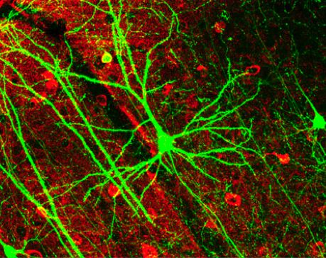

Test yourselfConcept challengesShort situations that test whether you really understand the biology. Predict first, then check. Sorted by unit. WonderBig questionsParadoxes and mysteries, from why we sleep to why whales rarely get cancer. Some are solved; some nobody has answered yet.
WonderBig questionsParadoxes and mysteries, from why we sleep to why whales rarely get cancer. Some are solved; some nobody has answered yet.Each challenge and big question has a Show on the board button, which shows it full screen in large text with the answer hidden, for discussion in class. There are challenges for every SL and AHL unit. Nature of Science and Theory of Knowledge have their own pages in the menu.
Photo credits
- A neuron made to glow with a fluorescent protein: Nrets, English Wikipedia, CC BY 2.5, Wikimedia Commons
- A blue whale seen from above: NOAA Fisheries, Public domain, Wikimedia Commons